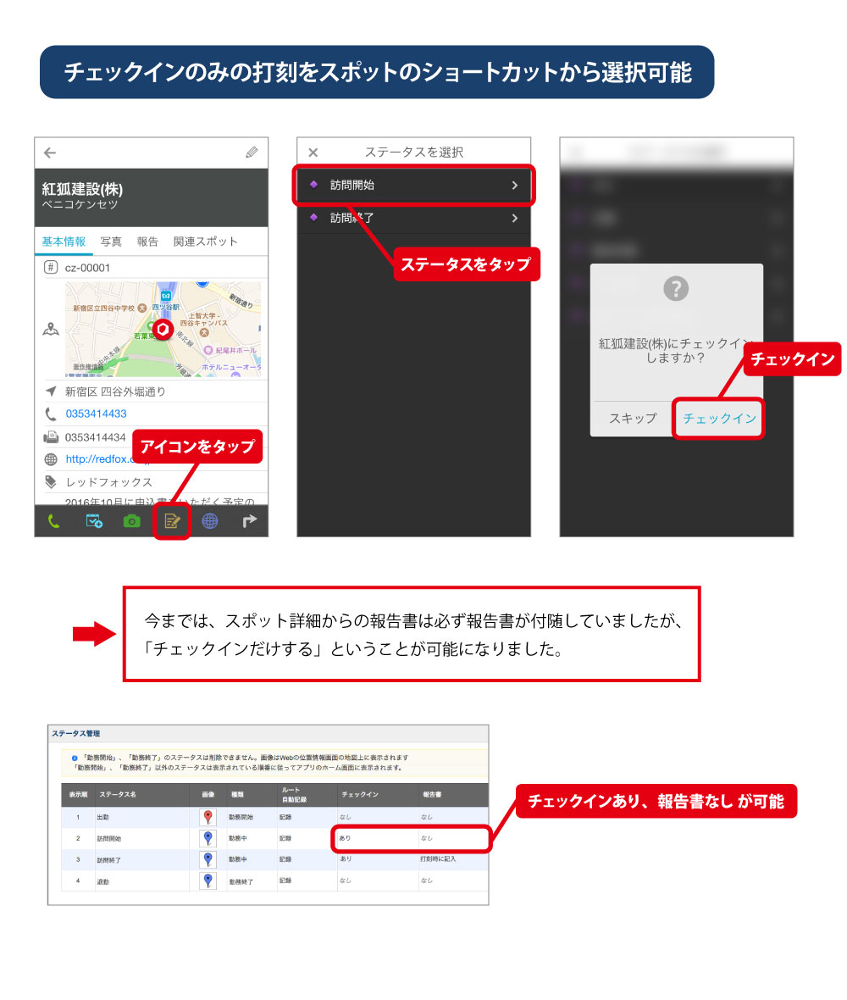
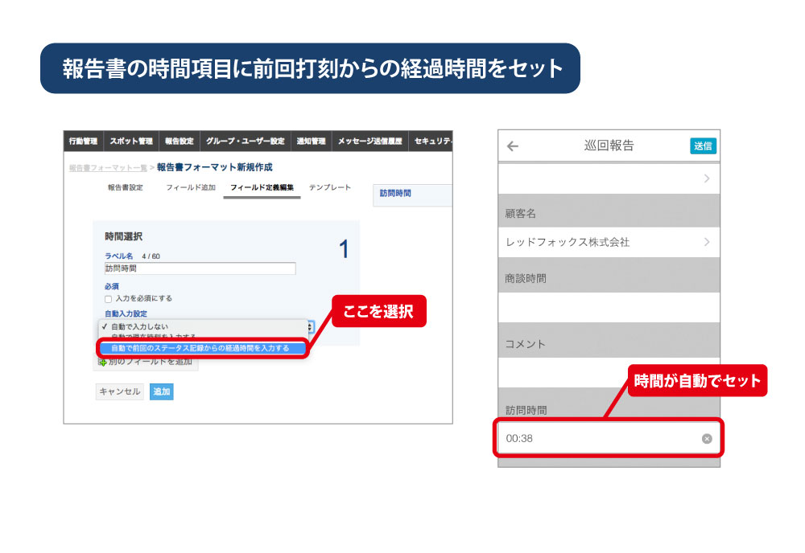

最新情報¶
地球規模のランキングがはじまります¶
歩数ランキング機能が追加されます¶
アプリで訪問開始時・終了時に打刻することで簡易的に訪問時間の計測ができるようになります。
- アプリで歩数のランキング確認できます。
- 出勤から退勤の間だけ、歩数をカウントします。
- グループメンバー内での歩数ランキングが表示されます。
- グループの他メンバー情報の閲覧設定に従って、一般ユーザーの場合は表示範囲が限定されます。
- 「全員閲覧できる」に設定すると他メンバーのランキングが表示されます。
- 「管理者のみ閲覧できる」に設定すると自分だけが表示されます。
訪問時間を計測しましょう。¶
アプリで訪問開始時・終了時に打刻することで簡易的に訪問時間の計測ができるようになります。
設定¶ ステータス チェックイン 報告書 訪問開始 あり なし 訪問終了 あり あり（時間項目を設定し、「前回の打刻からの経過時間をセット」を有効にします）
1. 客先に到着したら「訪問開始」をタップします。¶
- スポットの報告アイコンから、チェックインのみの打刻も選択できるようになります。
- 顧客情報を見た後に、そのまま操作すると手順も削減できます。

注釈
2017年7月末から利用できます。
iOSはver3.12.0以降、Androidはver3.11.1以降で動作します。
2. 訪問が終わったら「訪問終了」をタップします。¶
- 報告書入力時に時間項目には自動で 訪問開始をタップしてからの時間 が自動でセットされています。

注釈
2017年7月末から利用できます。
iOSはver3.12.0以降、Androidはver3.11.1以降で動作します。
パスワードポリシー¶
パスワードポリシー機能を強化して、より安全にご利用いただけるようになります。
システム管理者だけでなく、一般ユーザーとグループ管理者にもパスワードポリシーを設定できるようになりました。
パスワードポリシー自体に機能を追加しました。

アプリではパスワードポリシー設定に沿って以下のようなチェックを行うようにしました。
- パスワード強度・・・グループ参加時、およびパスワード変更時にパスワード強度を満たしていない場合はエラーになります。
- ログイン試行回数・・・ログイン試行回数を超えて失敗した場合は ロックアウト されます。
- パスワード有効期限・・・有効期限が近づくとパスワード変更を促します。
注釈
パスワードの強度は初期状態で、最低8文字以上に設定されています。
※上記内容は2017年4月10日に6文字から8文字に修正しています。
変更になるバージョン¶
2017年4月末のリリースを予定しています。
- 管理サイト ・・・ ver.2.11.0
- iOS ・・・ ver.3.14.0
- Android ・・・ ver.3.13.0
注釈
上記より以前のバージョンのアプリでは、パスワードポリシーによるチェックは行われません。
アプリのスポット詳細画面の変更¶
スポットの詳細画面に表示される「スポット基本情報」と「報告一覧」を分けることで、今までよりも使いやすくなります。

変更になるバージョン¶
iOS
v3.6.0 ・・・ 2016年3月
Android
v3.9.0 ・・・ 2016年8月
アプリの写真について¶
- 従来の写真の圧縮処理を見直して、画質の改善や解像度の維持ができるようになりました。
- 建物の写真の細かい部分も見やすくなります。
- 今まで読み取れなかった書類の文字も読みやすくなります。
画像比較¶ 従来 新方式 画像 

解像度 約10万画素 約80万画素 ファイルサイズ 50KB 100KB
ご利用における注意点¶
- 管理サイト、アプリの一覧画面上での表示サイズは今までと変わりませんので、変化が見られないかと思いますが、クリック(タップ)していただくと従来より画像サイズが大きく、見やすくなっていることが実感できるかと思います。
- ダウンロードした際にも従来よりも画像サイズ、ファイルサイズが大きくなっており、固定サイズではなくなります。
注釈
ダウンロード後にEXCELなどで整形をされているお客様は、この点をご注意ください。
ご利用いただくまでの流れ¶
- 当機能はお客様ごとに開始日をずらして、段階的にご利用できるよう準備を進めております。
- ご利用可能な時期になりましたら、その2週間前に管理サイトのお知らせよりご連絡いたします。
- それまでに、アプリのバージョンアップの進めていただきますようお願い致します。
- この圧縮処理の変更を有効にするにはアプリのバージョンをiOSの場合は3.5.4以上、Androidの場合は3.5.4.0以上にする必要があります。
- 全ユーザーのバージョンアップが完了しているお客様から優先的にご利用いただけるように進めさせていただきます。
- ご利用可能日になりましたら、必ずアプリで設定の同期をしてください。
- 設定の同期後に撮影した写真からサイズが大きく、見やすくなります。
- 設定の同期をしなくても今まで通り操作はできますが、同期をしたユーザーと同期をしていないユーザーで写真のサイズ、画質が異なってしまいます。
ユーザーのアプリバージョンを確認するには¶
- 管理サイトの[グループ・ユーザー設定] > [ユーザー管理]の一覧リストに表示されている「アプリバージョン」をご確認ください。
「アプリバージョン」の横の三角アイコンで並べ替えができます。
報告書でバーコード読み取り¶
報告書にバーコード読み取り機能を追加しました。現場での活用方法がさらに広がります。
現場で各種コードを読み取り、報告書に文字を自動入力できます。
報告書の設定
報告書の設定
- 管理サイトの[報告設定] > [フォーマット設定]より報告書を作成してください。(管理サイトマニュアルP.46参照)
- フィールド追加より[バーコードリーダー]のフィールドを追加することで利用可能です。
アプリでの利用
- アプリの[設定]より[設定を同期]を実行することで、報告書が利用できるようになります。
- 報告書内の「コードをスキャン」の箇所をタップするとカメラが起動して、バーコードの読み取りができます。
利用できるバーコードの種類¶ Android CALENDAR_EVENT, CODABAR, CODE_128, CODE_39, CODE_93, CONTACT_INFO, DATA_MATRIX, DRIVER_LICENSE, EAN_13, EAN_8, EMAIL, GEO, ISBN, ITF, PDF417, PHONE, PRODUCT, QR_CODE, SMS, TEXT, URL, WIFI iOS7以降 UPCE, Code39, Code39Mod43, EAN13, EAN8, Code93, Code128, PDF417, QR, Aztec iOS8以降 上記 + Interleaved2of5, ITF14, DataMatrix 注釈
本機能が利用できるバージョン
- iOS ver 3.5.4 以降
- Android ver 3.5.4.0 以降
ユーザーのアプリバージョンを確認するには
- 管理サイトの[グループ・ユーザー設定] > [ユーザー管理]の一覧リストに表示されている「アプリバージョン」をご確認ください。


スポット機能の強化¶
アプリバージョンv3.5.0で以下のスポット機能を強化して、現場の操作時間を減らし、 さらに活用できるケースを増やします。
- スポット検索の高速化
- 検索機能の強化
- 条件の項目追加
- 検索条件の保存
- 自動縮尺のルール変更